В проекте организации самостоятельных безопасных путешествий «Hapahulu» возникла необходимость проведения вебинаров. Простое гугление выдало тысячи вариантов платформ для онлайн-конференций, сотни статей с обзорами, но платформы рождаются, умирают и сильно отличаются по качеству, а статьи устаревают.
Поэтому пришлось все сравнивать самому.
Наши основные требования к площадке для Вебинара были таковы:
Скажу сразу, что проверка проводилась в режиме «нравится/не нравится». Оценивался как внешний вид сайта, так и наличие полной информацией о продукте. Для составления впечатления от сайта очень важны скриншоты или работающее демо, но если сайт их не предоставляет — оценка проводилась по общему ощущению от сайта.
Первым логичным решением было решение рассмотреть скайп-конференции, благо есть премиум-аккаунт.
Групповая видеосвязь от Skype поддерживают до 10 участников (рекомендуется не более пяти). Есть несущественные для нас ограничения: не более 100 часов групповой видеосвязи в месяц, не более 10 часов в день и не более 4 часов на каждый групповой видеозвонок.
Из плюсов выделим то, что скайп есть практически у каждого, это просто и удобно.
Из минусов то, что необходимо заранее знать все аккаунты участников, что делает невозможным легкую регистрацию и подключение участников вебинара.
Также невозможно модерировать участников и, например, давать право голоса только одному спикеру, заглушая зрителей.
Вывод: можно использовать для конференций в маленьких проверенных группах людей.
Много человек на профильных сайтах рекомендовали работать с этими сервисами, но они — англоязычные.
Наши клиенты могут не знать английский язык, поэтому — не рассматриваем их в выборке и сразу отметаем.
Были неплохие отзывы на searchengine.ru.
Сервис предлагает конференц-комнаты, сайт имеет ужасный дизайн. Что внутри — страшно представить.
Но в наличии описание возможностей сервиса со скриншотами по каждой возможной функции сервиса.
Есть возможность заказать пробный пакет, но что скрывается за этой фразой — я не нашел.
Вывод: осторожно обойти
Странный сайт с логотипом от Apple , маленький заявленный функционал системы, «рыба» на внутренних страницах.
Вывод: в топку.
Нет ни демонстрации возможностей, ни скриншотов предлагаемого решения.
Вывод: за что платить деньги?
Площадка для проведения вебинаров и вебконференций с симпатичным сайтом.
Но на этом симпатичном сайте — полное отсутствие описания функциональности, скриншотов, демо-интерфейса или демо-семинаров
Вывод: за что платить такие деньги?
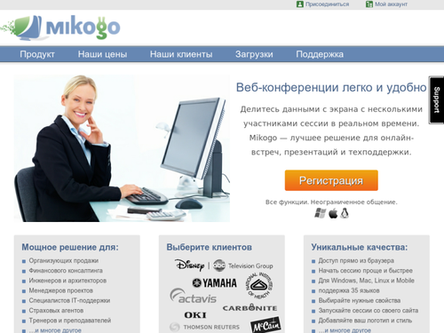
Этот сервис тоже рекомендовался некоторыми специалистами, но…
Странный несовременный сайт, возможность заползти в какие-то дебри сайта с неподтвержденной информацией и не найти дорогу назад, оставляют не очень хорошее впечатление.
Но на сайте очень хороший справочник для клиента, даже есть скриншоты приложения для всех основных ОСей.
Вывод: дороговато, не находите?
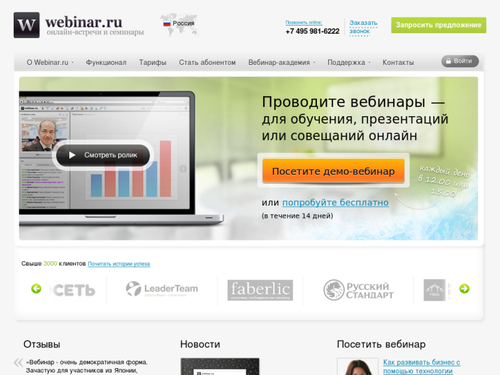
Очень качественно сделанная площадка для проведения вебинаров. В наличии куча обучающей информации, есть «вопросы и ответы», можно посмотреть запись вебинара, чтобы оценить интерфейс и удобство пользования.
Также можно пройти курс обучения и стать профессиональным сертифицированным онлайн-тренером.
Можно записаться на демо-семинар, но скриншотов интерфейса найти не удалось.
Система работает из интернет-браузера, не требует загрузки и установки какого-либо ПО или оборудования.
Вывод: хорошо, но дорого
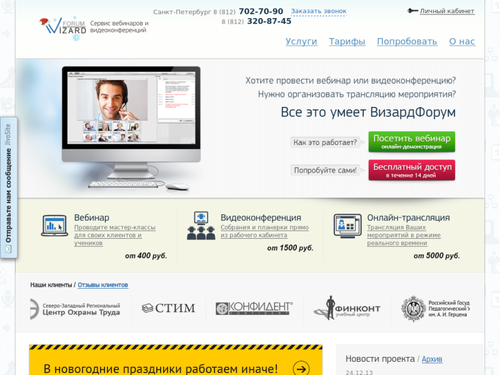
Большой сервис для проведения вебинаров, видеоконференций, удаленного обучения.
Очень симпатичный и логичный сайт, на котором четко прописано, что предлагают клиенту.
Можно заказать демо-семинар, чтобы пощупать систему изнутри. Также есть скриншоты интерфейса.
Все работает из-под веб-браузера и не требует установки сторонних программ.
Вывод: хорошо, но дорого
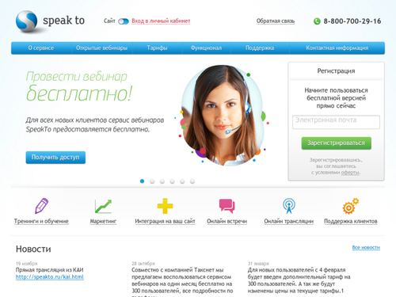
Очень симпатичный, логичный сайт, но, как всегда, ни скриншотов, ни демо.
Все работает из-под веб-браузера и не требует установки сторонних программ.
Вывод: сайт привлекательный, но очень мало информации о системе.
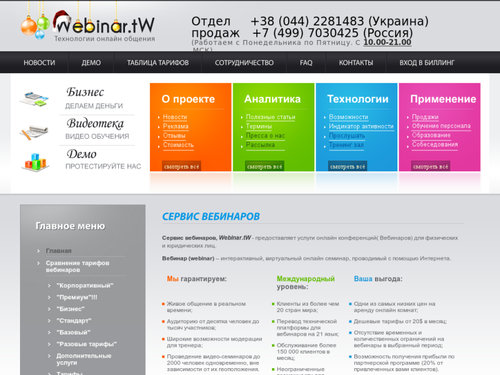
Площадка для проведения вебинаров с немного неряшливым сайтом.
Присутствует видео, в котором можно оценить внешний вид системы, который, кстати, похож на webinar.fm
Из плюсов — возможность проводить платные вебинары. Комиссия сервиса составляет 10%.
Требуется ли установка программы и какие ОС поддерживаются — не известно.
Вывод: очень мало информации о системе.
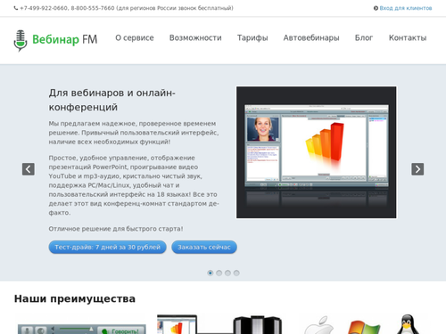
Очень симпатичный, логичный сайт.
Демонстрации интерфейса нет, есть немного скриншотов, по которым видно, что дизайн сервиса похож на webinar.tw
Поддержка всех операционных систем: Windows/Mac OS/Linux
Вывод: симпатично, но мало информации о системе
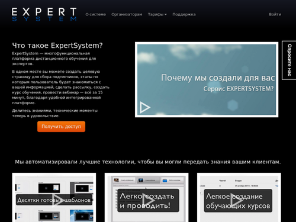
Система онлайн-обучения, а не только проведения вебинаров, позволяющяя
Также можно кастомизировать продающие страницы и страницы курсов, прикреплять документы, проводить платные вебинары и еще очень много дополнительного функционала.
Вывод: для единичного вебинара не подходит, но как обучающая система и продажа инфопродукта — очень даже удобно.
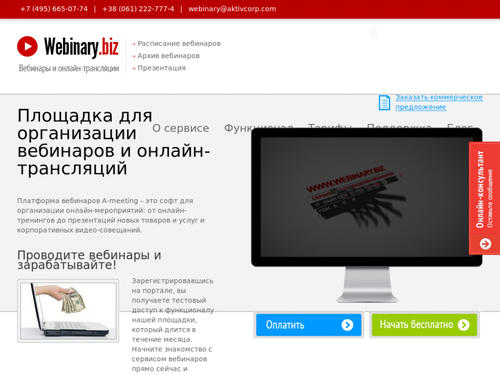
Приятный сайт c небольшими косячками, но, как всегда, ни скриншотов, ни демо.
Есть только видео.
Судя по видео, интерфейс сервиса достаточно мил и, как минимум, не банален.
Также радует возможность проводить бесплатные семинары с органичением в 20 минут и 5 участников.
Не работает на MacOs.
Вывод: темная лошадка, может быть.
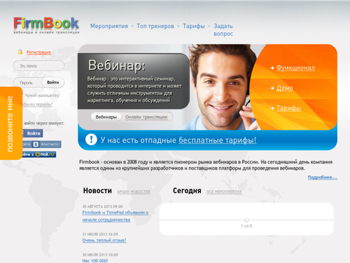
Площадка проведения вебинаров, работающая с 2008 года. Присутствует список бесплатных вебинаров.
Есть живое демо без регистрации и смс! И все работает в браузере. Внешний вид сервиса, конечно, не фонтан, но работать можно.
Можно бесплатно создавать открытые вебинары, также есть возможность проводить платные семинары за 30% комиссии.
Вывод: можно использовать как площадку для бесплатных вебинаров
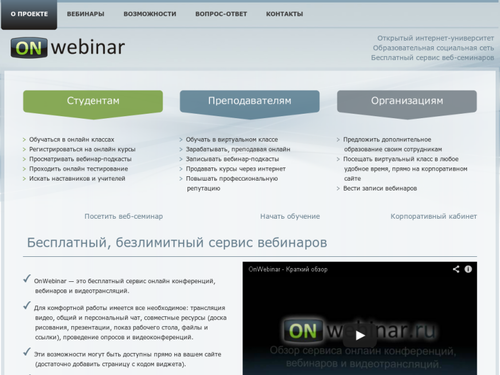
Бесплатная, безлимитная площадка вебинаров с очень неплохим интерфейсом, но без возможности предварительной регистрации участников.
На площадке есть список открытых вебинаров, но он реализован на flash, что отрицательно сказывается на индексации поисковиками.
Вывод: можно использовать для разовых вебинаров
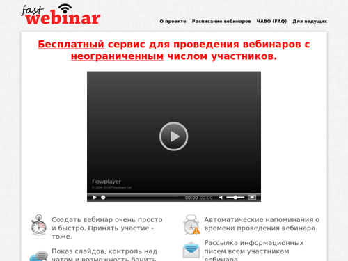
Бесплатный, безлимитный сервис вебинаров с устаревшим дизайном и функционалом.
Но тут уже есть страница регистрации, рассылка напоминаний и инфописем всем участникам, и возможность создавать секретные вебинары.
Вывод: если бы не примитивный интерфейс, был бы очень неплохой вариант.
Идеальную систему никто не предложил, но я для себя отметил firmbook.ru, onwebinar.ru и webinary.biz, которые буду тестировать дальше для бесплатных вебинаров.
Если понадобятся закрытые платные вебинары, стоит посмотреть в сторону firmbook.ru, expertsystem.ru и webinar.tw, которые открыто заявляют о возможности проводить платные вебинары, принимать платежи и выводить деньги.